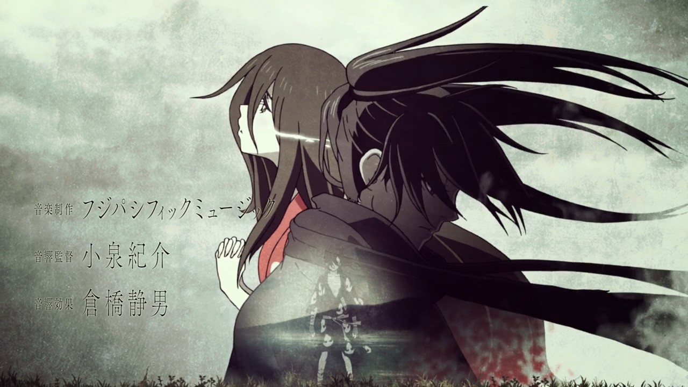

Dororo (どろろ lit. Ladrón?) es una serie de anime dirigida por Kazuhiro Furuhashi, escrita por Yasuko Kobayashi y producida por el estudio de animación MAPPA. Se basa en el manga homónimo de Osamu Tezuka.1 2 El lanzamiento de la serie fue anunciada
el 19 de marzo de 2018, siendo una co-producción entre MAPPA y Tezuka Productions. Fue distribuida por Amazon Prime Video.3456 Dororo fue estrenada el 7 de enero de 2019 por Tokyo MX y por Amazon en el resto del mundo.

Opening
La nueva canción del grupo QUEEN BEE, Kaen, ha sido escrita exclusivamente para el anime de televisión Dororo. Ya se ha hecho pública la cancion de Kaen en el PV del anime además en la nueva key visual podemos ver a los dos protagonistas Hyakkimaru
y Dororo.